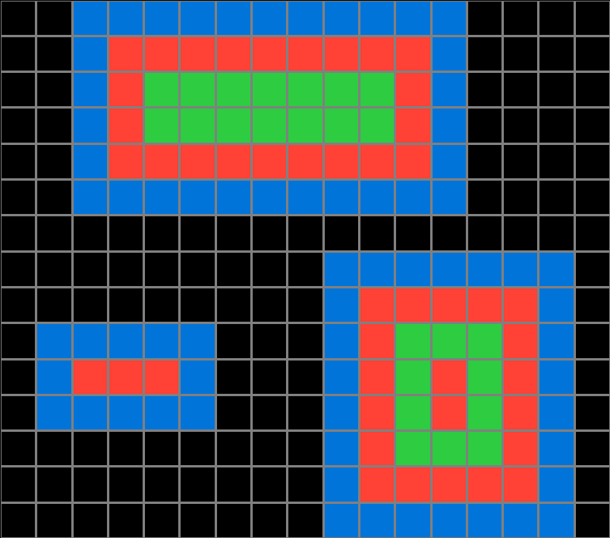
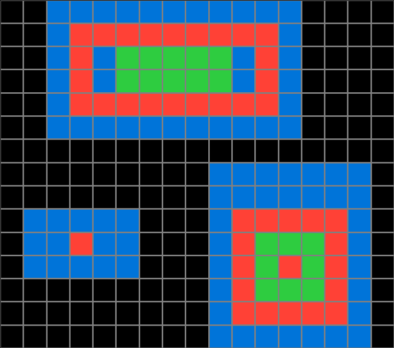
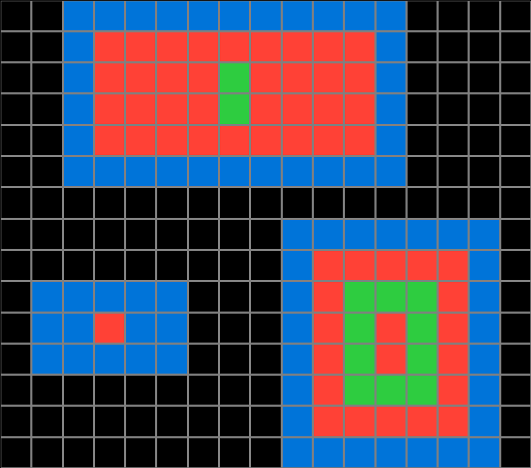
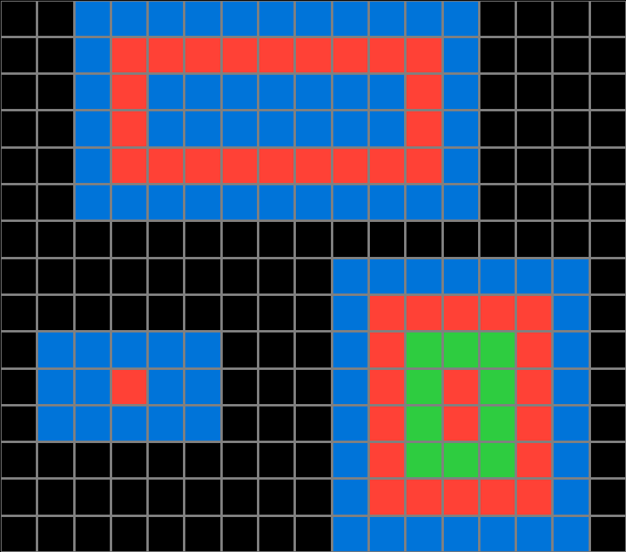
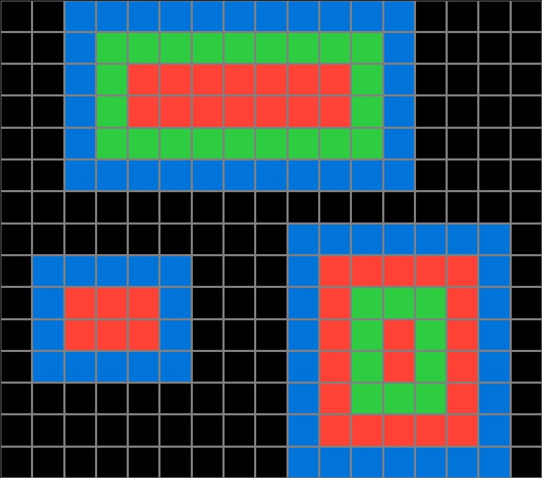
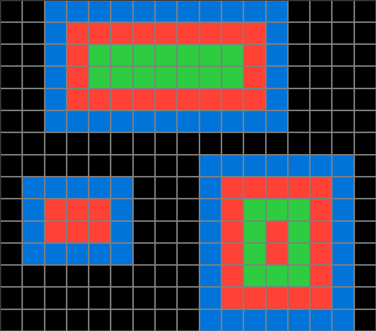
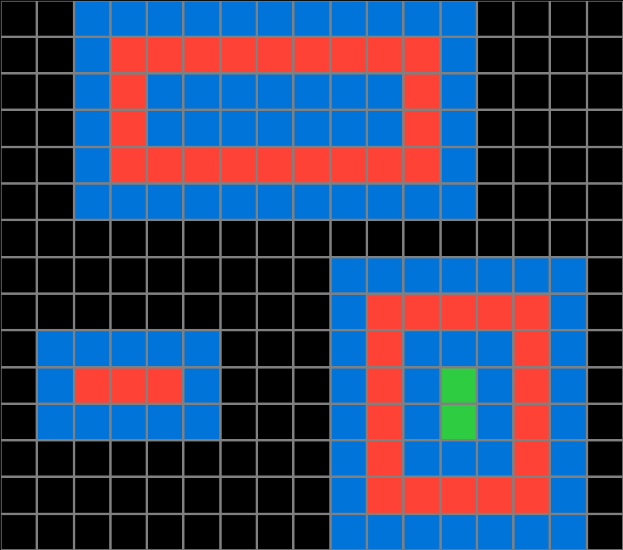

516b51b7.json
Navigation
Train Examples


Test Example


Participant 1
Initial description: In the output the inside of the blue rectangles is colored in using alternating red and green rectangles.
Final description: In the output the inside of the blue rectangles is colored in using alternating red and green rectangles.

Participant 2
Initial description: Create an alternating pattern of colored pink and green squares spiraling towards the middle of the larger blue ones.
Final description: Create an alternating pattern of colored pink and green squares spiraling towards the middle of the larger blue ones.

Participant 3
Initial description: Create a red then green concentric color pattern inside the blue boxes.
Final description: Create a red then green concentric color pattern inside the blue boxes.

Participant 4
Initial description: I believed the rule to be red being the first fill color for the blue blocks, followed by green if there was enough space.
Final description: I thought the rule was related to how much space inside a block could fit other colors.



Participant 5
Initial description: The blue stationary boxes are filled with red, leaving a one box border. Then the red color becomes the border for a green box if it fits, then red again.
Final description: I missed the size of a blue box at the beginning and couldn't find the mistake until try three.



Participant 6
Initial description: Alternate color for each exterior rows
Final description: Alternate color for each row from exterior to interior of shape


Participant 7
Initial description: For each large block of blue squares, leave a blue border and then fill the inside in completely around with alternating red rectangles, then green rectangles, then red rectangles and so on until the middle is full and only the outermost outline is blue.
Final description: For each large block of blue squares, leave a blue border and then fill the inside in completely around with alternating red rectangles, then green rectangles, then red rectangles and so on until the middle is full and only the outermost outline is blue.

Participant 8
Initial description: In each rectangle you leave the blue row all the way around. And the next row inside the blue will be orange the same single line to make a complete rectangle of the orange. if the rectangle is bigger you will then do the next row in the lime green and so on.
Final description: In each rectangle you leave the blue row all the way around. And the next row inside the blue will be orange the same single line to make a complete rectangle of the orange. if the rectangle is bigger you will then do the next row in the lime green and so on.